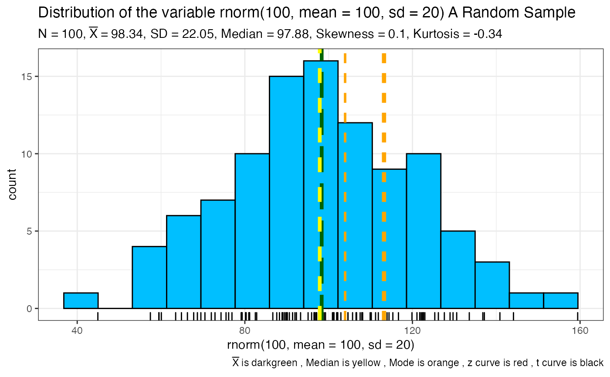
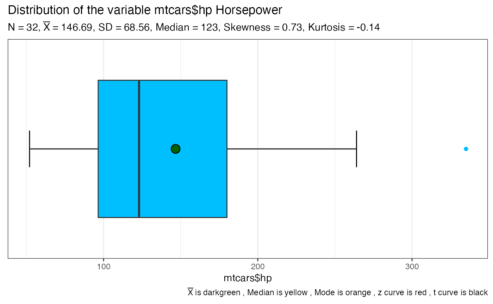
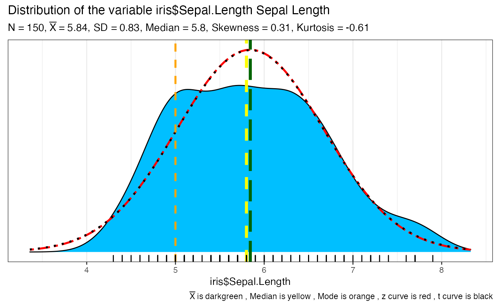

This function takes a vector of numeric data and returns one or more ggplot2 plots that help you visualize the data. Meant to be a useful wrapper for exploring univariate data. Has a plethora of options including type of visualization (histogram, boxplot, density, violin) as well as commonly desired overplots like mean and median points, z and t curves etc.. Common descriptive statistics are provided as a subtitle if desired and sent to the console as well.
SeeDist( x, title = "Default", subtitle = "Default", numbins = 0, xlab = NULL, var_explain = NULL, data.fill.color = "deepskyblue", mean.line.color = "darkgreen", median.line.color = "yellow", mode.line.color = "orange", mean.line.type = "longdash", median.line.type = "dashed", mode.line.type = "dashed", mean.line.size = 1.5, median.line.size = 1.5, mean.point.shape = 21, median.point.shape = 23, mean.point.size = 4, median.point.size = 4, zcurve.color = "red", zcurve.type = "twodash", zcurve.size = 1, tcurve.color = "black", tcurve.type = "dotted", tcurve.size = 1, mode.line.size = 1, whatplots = c("d", "b", "h", "v"), k = 2, add_jitter = TRUE, add_rug = TRUE, xlim_left = NULL, xlim_right = NULL, ggtheme = ggplot2::theme_bw() )
Arguments
| x | the data to be visualized. Must be numeric. |
|---|---|
| title | Optionally replace the default title displayed. title = NULL will remove it entirely. title = "" will provide an empty title but retain the spacing. A sensible default is provided otherwise. |
| subtitle | Optionally replace the default subtitle displayed. subtitle = NULL will remove it entirely. subtitle = "" will provide an empty subtitle but retain the spacing. A sensible default is provided otherwise. |
| numbins | the number of bins to use for any plots that bin. If nothing is
specified the function will calculate a rational number using Freedman-Diaconis
via the |
| xlab | Custom text for the `x` axis label (Default: `NULL`, which will cause the `x` axis label to be the `x` variable). |
| var_explain | additional contextual information about the variable as a string such as "Miles Per Gallon" which is appended to the default title information. |
| data.fill.color | Character string that specifies fill color for the main data area (Default: `deepskyblue`). |
| mean.line.color, median.line.color, mode.line.color | Character string that specifies line color (Default: `darkgreen`, `yellow`, `orange`). |
| mean.line.type, median.line.type, mode.line.type | Character string that specifies line color (Default: `longdash`, `dashed`, `dashed`). |
| mean.line.size, median.line.size, mode.line.size | Numeric that specifies line size (Default: `1.5`, `1.5`, `1`). You can set to `0` to make any of the lines "disappear". |
| mean.point.shape, median.point.shape | Integer in 0 - 25 specifies shape of mean or median point mark on the violin plot (Default: `21`, `23`). |
| mean.point.size, median.point.size | Integer specifies size of mean or median point mark on the violin plot (Default: `4`). You can set to `0` to make any of the points "disappear". |
| zcurve.color, tcurve.color | Character string that specifies line color (Default: `red`, `black`). |
| zcurve.type, tcurve.type | Character string that specifies line color (Default: `twodash`, `dotted`). |
| zcurve.size, tcurve.size | Numeric that specifies line size (Default: `1`). You can set to `0` to make any of the lines "disappear". |
| whatplots | what type of plots? The default is whatplots = c("d", "b", "h", "v") for a density, a boxplot, a histogram, and a violin plot |
| k | Number of digits after decimal point (should be an integer) (Default: k = 2) for statistical results. |
| add_jitter | Logical (Default: `TRUE`) controls whether jittered data ponts are added to violin plot. |
| add_rug | Logical (Default: `TRUE`) controls whether "rug" data points are added to density plot and histogram. |
| xlim_left, xlim_right | Logical. For density plots can be used to override the default which is 3 std deviations left and right of the mean of x. Useful for theoretical reasons like horsepower < 0 or when `ggplot2` warns you that it has removed rows containing non-finite values (stat_density). |
| ggtheme | A function, ggplot2 theme name. Default value is ggplot2::theme_bw(). Any of the ggplot2 themes, or themes from extension packages are allowed (e.g., hrbrthemes::theme_ipsum(), etc.). |
Value
from 1 to 4 plots depending on what the user specifies as well as an extensive summary courtesy `DescTools::Desc` printed to the console
Warning
If the data has more than 3 modal values only the first three of them are plotted. The rest are ignored and the user is warned on the console.
Missing values are removed with a warning to the user
See also
nclass
Examples
#> Warning: There are 100 modal values displaying just the first 3#> ------------------------------------------------------------------------------ #> rnorm(100, mean = 100, sd = 20) #> #> length n NAs unique 0s mean meanCI' #> 100 100 0 = n 0 98.34 93.97 #> 100.0% 0.0% 0.0% 102.71 #> #> .05 .10 .25 median .75 .90 .95 #> 63.32 69.42 81.13 97.88 113.25 126.32 133.72 #> #> range sd vcoef mad IQR skew kurt #> 114.50 22.05 0.22 23.43 32.12 0.10 -0.34 #> #> lowest : 44.93, 57.46, 59.48, 59.53, 60.07 #> highest: 136.79, 137.16, 140.87, 144.11, 159.43 #> #> ' 95%-CI (classic) #>#> ------------------------------------------------------------------------------ #> mtcars$hp #> #> length n NAs unique 0s mean meanCI' #> 32 32 0 22 0 146.69 121.97 #> 100.0% 0.0% 0.0% 171.41 #> #> .05 .10 .25 median .75 .90 .95 #> 63.65 66.00 96.50 123.00 180.00 243.50 253.55 #> #> range sd vcoef mad IQR skew kurt #> 283.00 68.56 0.47 77.10 83.50 0.73 -0.14 #> #> lowest : 52.00, 62.00, 65.00, 66.00 (2), 91.00 #> highest: 215.00, 230.00, 245.00 (2), 264.00, 335.00 #> #> ' 95%-CI (classic) #>SeeDist(iris$Sepal.Length, var_explain = "Sepal Length", whatplots = "d")#> ------------------------------------------------------------------------------ #> iris$Sepal.Length #> #> length n NAs unique 0s mean meanCI' #> 150 150 0 35 0 5.84 5.71 #> 100.0% 0.0% 0.0% 5.98 #> #> .05 .10 .25 median .75 .90 .95 #> 4.60 4.80 5.10 5.80 6.40 6.90 7.25 #> #> range sd vcoef mad IQR skew kurt #> 3.60 0.83 0.14 1.04 1.30 0.31 -0.61 #> #> lowest : 4.30, 4.40 (3), 4.50, 4.60 (4), 4.70 (2) #> highest: 7.30, 7.40, 7.60, 7.70 (4), 7.90 #> #> ' 95%-CI (classic) #>